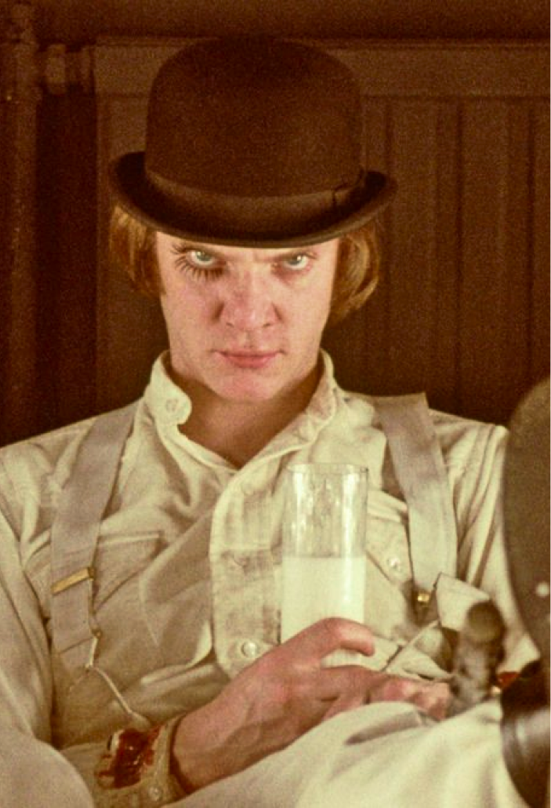

La naranja mecánica
A Clockwork Orange (La naranja mecánica en Hispanoamérica y España) es una película angloestadounidense de ciencia ficción de 1971, producida y dirigida por Stanley Kubrick. Durante su lanzamiento se convirtió en la cinta más polémica de la historia del cine, siendo así el trabajo más arriesgado y reivindicativo de su director. Adaptación fílmica de la novela homónima de 1962 escrita por Anthony Burgess. La película, filmada en el Reino Unido, relata las desventuras de Alex DeLarge (Malcolm McDowell), un delincuente juvenil cuyos placeres son: escuchar música clásica (en especial a Beethoven), el sexo, las drogas y la «ultraviolencia», y lidera una pandilla (Pete, Georgie y Dim) a quienes llama drugos y con los que comete una serie de violentas fechorías, hasta que es traicionado por ellos y capturado por la policía. En un intento por salir de prisión se somete voluntariamente a una técnica psicológica de rehabilitación conductista experimental conocida como método Ludovico. La terapia funciona, Alex es liberado y ahora debe enfrentarse a su pasado desde su nueva conducta social condicionada. La mayor parte del filme se narra en nadsat, una jerga adolescente ficticia que combina lenguas eslavas, especialmente ruso, inglés y la jerga rimada cockney. En España e Hispanoamérica, algunos términos fueron adaptados al idioma caló.
La película se caracteriza por contenidos violentos que facilitan una crítica social en psiquiatría, el pandillerismo juvenil, las teorías conductistas en psicología y otros tópicos ubicados en una sociedad futurista distópica. Su banda sonora está principalmente compuesta por pasajes de música clásica, varios de ellos reinterpretados y en ocasiones, como en el caso de los créditos, adaptados por la compositora Wendy Carlos utilizando el sintetizador Moog.
Pese a la polémica que desató, la cinta fue nominada a numerosos reconocimientos cinematográficos, entre ellos cuatro premios Óscar, incluyendo el de mejor película, convirtiéndola en la primera película de ciencia ficción en ser nominada en esa categoría. Aunque no ganó el premio, sí forma parte de la lista AFI's 10 Top 10 en la categoría de películas de ciencia ficción. En 2020 la Biblioteca del Congreso de Estados Unidos seleccionó La naranja mecánica para ser preservada en el National Film Registry por ser «cultural, histórica o estéticamente significante».
La película fue filmada enteramente en Inglaterra, lugar de residencia de Kubrick. El director eligió a McDowell después de ver la película "If....". Colaboradores cercanos al director dijeron que era posible que no hubiera habido tal adaptación de la novela si el actor no aceptaba el papel. La elección de la vestimenta de Alex —una especie de traje para jugar cricket— fue elegida por Kubrick al ver al actor vestido así. El sufrimiento de McDowell durante toda la filmación fue largo y tedioso. Se fracturó una costilla durante la escena de tortura aplicada por sus ex drugos en el abrevadero para cerdos en medio del bosque, en pleno invierno.9 Se rayó la córnea del ojo cuando filmaban el tratamiento de Ludovico —el actor se arrancó el casco de látex con los cables que sujetaban su cabeza y sus párpados en un ataque de pánico después de largas horas—. El doctor que está sentado junto a Alex poniéndole gotas de agua en los ojos para que no se sequen era un doctor real.
La naranja mecánica fue la primera película que Kubrick lanzó bajo la productora Warner Bros. También fue la primera vez que escribió el guion en solitario. En el documental se aprecia el control total que el director tenía en sus películas, como en La naranja mecánica, en donde pidió una lista de los cines donde se iba a proyectar para saber si los colores de las paredes y el tipo de luz eran los adecuados. McDowell cuenta como anécdota en el documental el tipo de personalidad que tenía el director: después de la advertencia de su mánager por la falta de pago, el actor le reclamó a Kubrick; este respondió descontándole su salario con los partidos de ajedrez que le había ganado —en los descansos McDowell le enseñó a jugar al tenis de mesa y Kubrick al ajedrez—.
1968